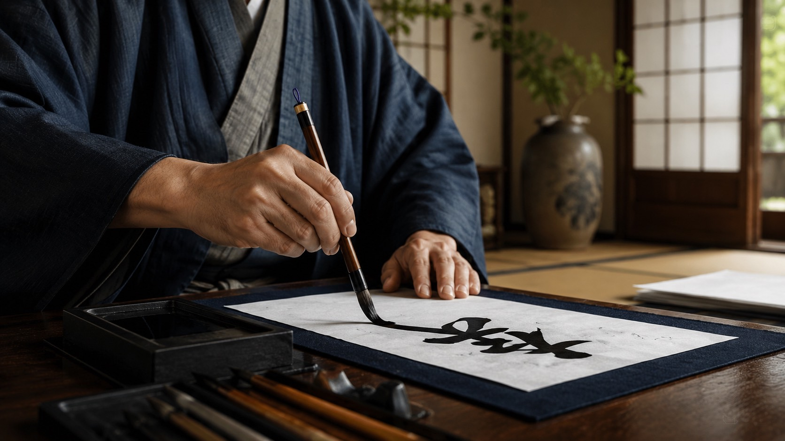

THE ART OF SHODŌ
About Japanese Calligraphy
Experience the Art of Japanese Calligraphy

The spirit and culture of Japan in every brushstroke
Japanese calligraphy, or shodō, took root in Japan with the arrival of kanji and has been passed down for more than a thousand years. More than simply writing beautifully, it is an art form that expresses the spirit and individuality of the person holding the brush.
During the experience, choose a kanji that reflects your name, wish, or intention and learn to write it with a brush. After practicing each stroke with care, you will paint the character onto your daruma yourself, creating a one-of-a-kind piece.